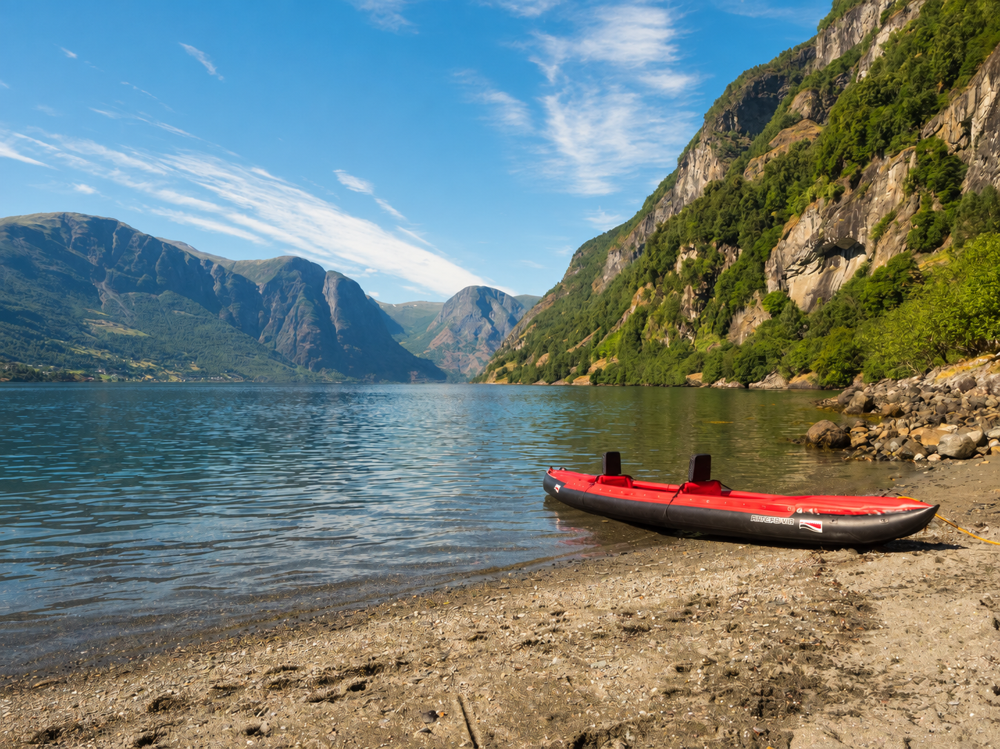
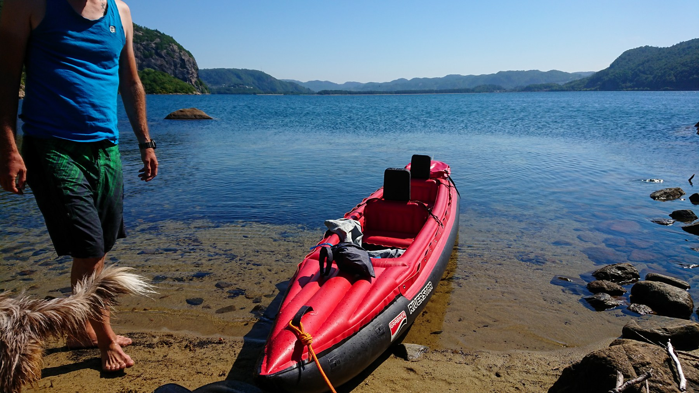
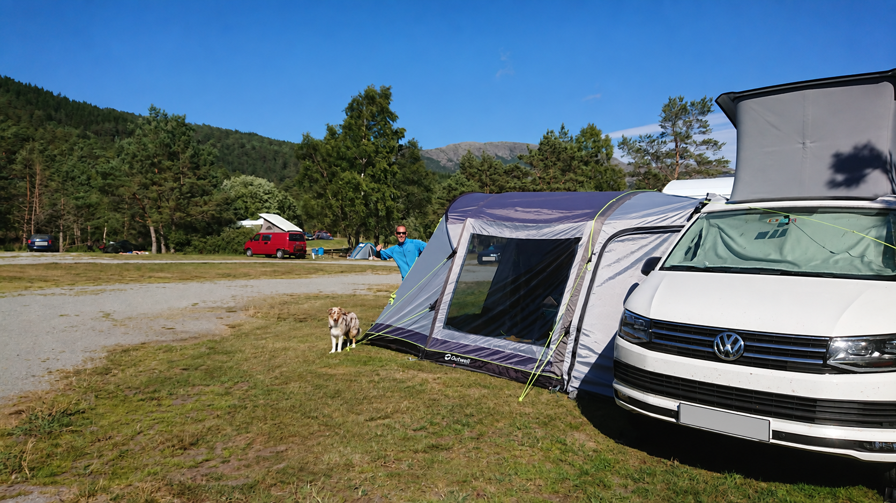

Groß auf dem Wasser.
Zusammengelegt im Van.
Schnell aufgebaut und einfach im Van verstaut: Genau das mögen wir an unserem Riverstar. Wir brauchen keinen aufwendigen Aufbau, um vom Reisen auf der Straße zum Paddeln zu wechseln.

UNSER GELIEBTER GRABNER RIVERSTAR
Den Van abstellen. Das Boot ins Wasser bringen. Und die Landschaft noch einmal ganz anders erleben.
VOM VAN AUFS WASSER
Spätestens seit 2018 gehört unser rot-schwarzer Riverstar zu unseren Reisen wie die Mountainbikes und Julie. Wir finden ihn einfach wunderschön – und mit ihm entdecken wir Orte aus einer Perspektive, die uns von der Straße aus entgeht.
Warum er zu uns passtUNSERE GRÜNDE
Schnell aufgebaut und einfach im Van verstaut: Genau das mögen wir an unserem Riverstar. Wir brauchen keinen aufwendigen Aufbau, um vom Reisen auf der Straße zum Paddeln zu wechseln.
Viel Stauraum im Boot und eine hohe Zuladung machen den Riverstar für uns zum vielseitigen Reisebegleiter. Für uns ist er auch mit zwei Erwachsenen und einem Kind oder Jugendlichen noch nutzbar. Dazu kommt unsere Grabner-Hecktasche oben auf dem Boot – zusätzlicher Platz für die Ausrüstung.
Auf dem Aurlandsfjord waren wir mit Julie unterwegs; auf Sardinien führte uns eine Bootsfahrt auf einen Stausee. Erinnerungen, für die wir gerne wieder die Paddel einpacken.

UNSERE MOMENTE
In Norwegen paddeln wir zwischen den Felswänden des Aurlandsfjords. Vom Wasser aus wirken die Berge noch größer. Der Riverstar ist unser kleines Stück Bewegungsfreiheit mitten in dieser Landschaft.
Später geht es zurück zum California. Das Boot kommt mit – und mit ihm die Möglichkeit, unterwegs wieder aufs Wasser zu wechseln.
Unsere Norwegenreise lesen ↗UNSERE ERFAHRUNGEN
Nach all den gemeinsamen Touren sind es vor allem seine Fahreigenschaften und seine robuste Bauweise, die uns begeistern. Ein Boot, das sich gut mitnehmen lässt und auf dem Wasser richtig Freude macht.
Wir erleben unseren Riverstar als ausgesprochen kippstabil – auch bei hohen Wellen hat er uns mit seiner stabilen Lage überzeugt. Für ein Luftkajak finden wir seine Spurtreue sehr gut und sein Tempo beeindruckend. Unsere Lenkanlage gehört dabei zur Ausstattung.
Die Kautschuk-Bootshaut ist für uns eine der großen Stärken des Riverstar. Wir empfinden das Boot als extrem robust und langlebig. Dass es uns schon seit vielen Jahren auf Reisen begleitet, schätzen wir mindestens so sehr wie den schnellen Aufbau.
SO IST UNSER BOOT AUSGESTATTET
Wir haben unseren Riverstar mit einem großen Zubehörpaket direkt von Grabner gekauft. Die Grabner-Bug/Heck-Tasche sitzt bei uns oben auf dem Heck und schafft zusätzlichen Stauraum. Eine Zweier-Spritzdecke und die Lenkanlage gehören ebenfalls zu unserer Ausstattung. Für den Weg zum Wasser nutzen wir einen Eckla-Foldy Bootswagen. Er lässt sich ohne Werkzeug zusammenfalten und kann sowohl das aufgebaute als auch das verpackte Boot transportieren.
Auch die Schwimmwesten sind von Grabner. Mit ihnen sind wir weniger zufrieden als mit dem Boot selbst.
FOTOGALERIE
Bilder anklicken, um sie groß anzusehen. Mit den Pfeilen kannst du durch die Galerie blättern oder die Slideshow starten.

VAN · BIKE · KAYAK
Jedes eröffnet uns einen anderen Weg durch die Landschaft. Zusammen machen sie unsere Art zu reisen aus.